iOS main in Assembly
How to see Assemble code in Xcode
debug -> Product -> Action-> Assemble “main.m”
1 | 12 int main(int argc, char * argv[]) { |
It produces a file with 541 lines of code with lots of assembler directives for debugger.
Assembler directives
1 | .section __TEXT,__text,regular,pure_instructions |
These are assembler directives, not assembly code. The .section directive specifies into which section the following will go.
Next, the .globl directive specifies that _main is an external symbol..p2align 2 aligns the current location in the file to a specified boundary, here it is 2^2, 4 bytes.
Then, here comes our main assemble label.
1 | _main: ; @main |
The
.cfi_startprocdirective is used at the beginning of most functions. CFI is short for Call Frame Information. A frame corresponds loosely to a function. When you use the debugger and step in or step out, you’re actually stepping in/out of call frames. In C code, functions have their own call frames, but other things can too. The.cfi_startprocdirective gives the function an entry into.eh_frame, which contains unwind information – this is how exception can unwind the call frame stack. The directive will also emit architecture-dependent instructions for CFI. It’s matched by a corresponding.cfi_endprocfurther down in the output to mark the end of ourmain()function. – https://www.objc.io/issues/6-build-tools/mach-o-executables/
SP and stack
1 | sub sp, sp, #48 ; =48 |
It sets up a call frame on the stack. Here sp refers to the register for stack-pointer. In AArch64 the stack-pointer must be 128-bit aligned; here is 48*8-bit.
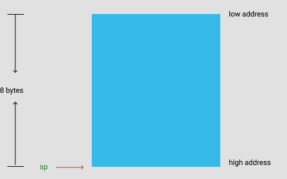
Registers
Processor operations mostly involve processing data. This data can be stored in memory and accessed from thereon. However, reading data from and storing data into memory slows down the processor, as it involves complicated processes of sending the data request across the control bus and into
the memory storage unitand getting the data through the same channel. To speed up the processor operations, the processor includes someinternal memory storage locations, called registers.The registers store data elements for processing without having to access the memory. A limited number of registers are built into the processor chip. – https://www.tutorialspoint.com/assembly_programming/assembly_registers.htm
In ARM 64, the following graph shows the registers’ roles.

- The first eight registers, r0-r7, are used to pass argument values into a subroutine and to return result values from a function.
- The frame record for the innermost frame (belonging to the most recent routine invocation) shall be pointed to by the
Frame Pointer register(FP). The lowest addressed double-word shall point to theprevious frame recordand the highest addressed double-word shall contain the value passed in LR on entry to the current function.
Stack Structure
The stack is a
contiguous area of memorythat may be used for storage of local variables and for passing additional arguments to subroutines when there are insufficient argument registers available.The stack implementation is full-descending, withthe current extent of the stackheld in the special-purpose registerSP. –Procedure Call Standard for the ARM 64-bit Architecture (AArch64)- AArch64 ABI release 1.0
The ARM environment uses a stack that—at the point of function calls—is grows downward, and contains local variables and a function’s parameters. The stack is aligned at the point of function calls. Figure 1 shows the stack before and during a subroutine call.

Stack frames contain the following areas:
- The parameter area stores the arguments the caller passes to the called function or stores space for them, depending on the type of each argument and the availability of registers. This area resides in the caller’s stack frame.
- The linkage area contains the address of the caller’s next instruction.
- The saved frame pointer (optional) contains the base address of the caller’s stack frame.
- The local storage area contains the subroutine’s local variables and the values of the registers that must be restored before the called function returns. See Register Preservation for details.
- The saved registers area contains the values of the registers that must be restored before the called function returns. See Register Preservation for details.
In this environment, the stack frame size is not fixed.
Another stack frame layout graph comes from Procedure Call Standard for the ARM 64-bit Architecture (AArch64)- AArch64 ABI release 1.0

About stack and stack pointer, see more in.
Addressing Mode
As a beginner, I want to know how the addresses are calculated from the figures within the square brackets
Here, we have to know something about addressing modes. There are several addressing modes that define how the address is formed according to document s about ARMv8 instructions set
Base register - The simplest form of addressing is a single register. Base register is an X register that contains the full, or absolute, virtual address of the data being accessed, as you can see in this figure:
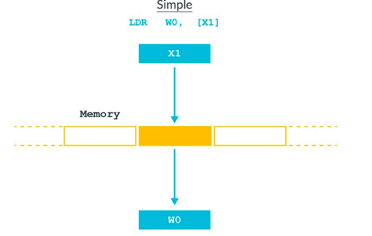
Offset addressing modes - An offset can be applied optionally to the base address, as you can see in this figure:
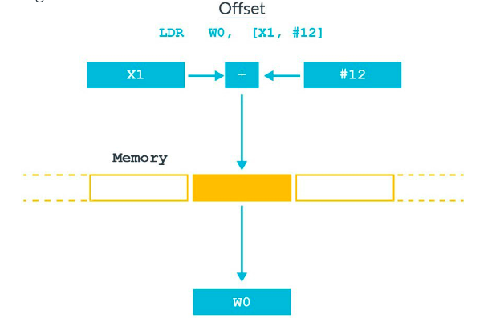
In the preceding figure, X1 contains the base address and
#12is a byte offset from that address. This means that the accessed address isX1+12. The offset can be either a constant or another register. This type of addressing might be used for structs, for example. The compiler maintains a pointer to the base of struct using the offset to select different members.Pre-index addressing modes - In the instruction syntax, pre-index is shown by adding an exclamation mark
!After the square brackets, as this figure shows: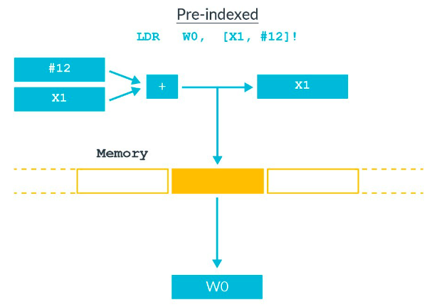
Pre-indexed addressing is like offset addressing,
except that the base pointer is updated as a result of the instruction. In the preceding figure,X1would have the value X1+12 after the instruction has completed.Post-index addressing modes - With post-index addressing, the value is loaded from the address in the base pointer, and then the pointer is updated, as this figure shows:
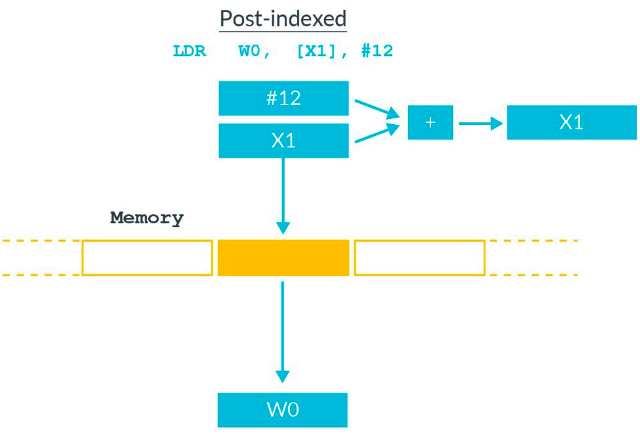
Post-index addressing is useful for popping off the stack. The instruction loads the value from the location pointed at by the stack pointer, and then moves the stack pointer on to the next full location in the stack.
So, here comes the next instruction in our main function:
1 | stp x29, x30, [sp, #32] |
stp pushes X29 and X30 onto the stack, which means this instruction will store values from x29 and x30 to memory where the address is sp+32. And in ARMv8, X29 is for frame pointer, X30 is used as the Link Register and can be referred to as LR.
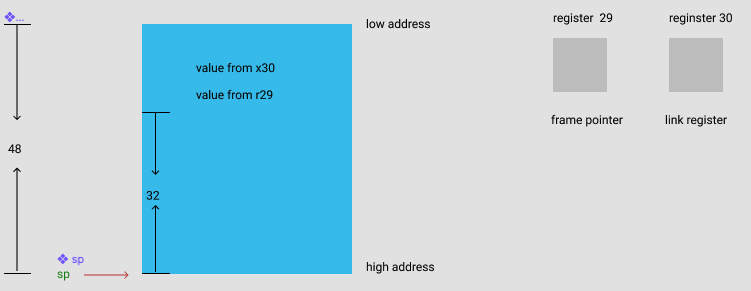
Store parameters on the Stack
1 | add x29, sp, #32 ; =32 |
set the value of x29 as sp + #32
1 | stur wzr, [x29, #-4] |
store value from wzr to x29 + #-4, which means write x29 + #-4 using 0;
The zero registers, ZXR and WZR, always read as 0 and ignore writes.
store value from w0 to x29 + #-8;
store value from x1 to sp + #16.
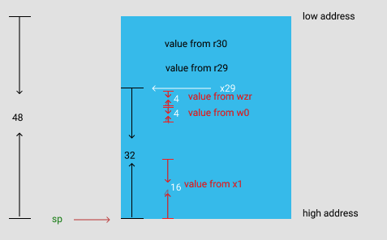
Most A64 instructions operate on registers. The architecture provides 31 general purpose registers. Each register can be used as a 64-bit X register (X0..X30), or as a 32-bit W register (W0..W30). W0 is the bottom 32 bits of X0.
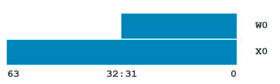
The choice of X or W determines the size of the operation. Using X registers will result in 64-bit calculations, and using W registers will result in 32-bit calculations.
Registers for parameters
The Arm architecture has some restrictions on how general purpose registers are used.
X0-X7 is the parameter/result registers. x0-x7, are used to pass argument values into a subroutine and to return result values from a function. The first argument is passed into X0, the second argument is in X1.
In our case, main function takes two arguments, so w0 and X are used.
Registers for return
Which register is used for return result is determined by the type of that result:
If the type, T, of the result of a function is such that
void func(T arg), the result is returned in the same registers used as passing arguments. For exmaple
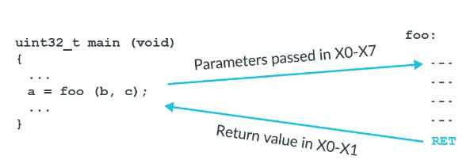
- Otherwise, the caller shall reserve a block of memory of sufficient size and alignment to hold the result. The address of the memory block shall be passed as an additional argument to the function in X8.
XR|X8.
1 | Ltmp0: |
Then, store value from x8 to sp + #8.
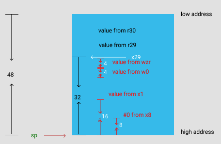
Branch instructions and Function calls
So let’s see the next instruction.
1 | bl _objc_autoreleasePoolPush |
Ordinarily, a processor executes instructions in program order. This means that a processor executes instructions in the same order that they are set in memory. One way to change this order is to use branch instructions. Branch instructions change the program flow and are used for loops, decisions and function calls.
The A64 instruction set also has some conditional branch instructions. These are instructions that change the way they execute, based on the results of previous instructions. – https://developer.arm.com/architectures/learn-the-architecture/armv8-a-instruction-set-architecture/program-flow
Unconditional branch instructions
There are two types of unconditional branch instructions;
Bwhich means Branch andBRwhich means Branch with Register.
The unconditional branch instruction B <label> performs a direct, PC-relative, branch to
In our case, the labe is _objc_autoreleasePoolPush; bl _objc_autoreleasePoolPush means we will jump to _objc_autoreleasePoolPush routine.
Conditional branch instructions
The conditional branch instruction B.
Labels for PC-relative addresses
A label can represent the PC value plus or minus the offset from the PC to the label. Use these labels as targets for branch instructions, or to access small items of data embedded in code sections.
1 | adrp x8, _OBJC_SELECTOR_REFERENCES_@PAGE |
adrpis to Address of 4KB page at a PC-relative offsetI drag the final executable into
hopper, the address for_OBJC_SELECTOR_REFERENCES_@PAGEis#0x1000090001
2
3
4
5
6000000010000621c adrp x8, #0x100009000 ; 0x1000093e0@PAGE
0000000100006220 add x8, x8, #0x3e0 ; 0x1000093e0@PAGEOFF, &@selector(class)
0000000100006224 adrp x9, #0x100009000 ; 0x1000093f0@PAGE
0000000100006228 add x9, x9, #0x3f0 ; 0x1000093f0@PAGEOFF, objc_cls_ref_AppDelegate
000000010000622c ldr x9, [x9] ; objc_cls_ref_AppDelegate,_OBJC_CLASS_$_AppDelegate
0000000100006230 ldr x1, [x8] ; "class",@selector(class)
1 | ldr x9, [x9] ; load data into x9 from the value in x9. |
The return value and auto release
1 | mov x29, x29 ; marker for objc_retainAutoreleaseReturnValue |
str x0, [sp, #8] means store data from x0 into [sp, #8]. As we mentioned before, for functions with this type NSString *NSStringFromClass(Class aClass), the x0 is used to store the return result.
Pass parameters
1 | ldur w0, [x29, #-8] ; load data into w0 from [x29, #-8]; which is int argc |
1 | mov x8, #0 |
1 | bl _UIApplicationMain ; call _UIApplicationMain |
ldp x29, x30, [sp, #32] this is for reset the fp and linker regiseter
add sp, sp, #48 means, the call frame for this function is gone.
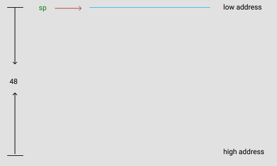
Author : RY Zheng
Link : https://suelan.github.io/2020/08/18/20200817-ios-main-in-assembly/
License : MIT